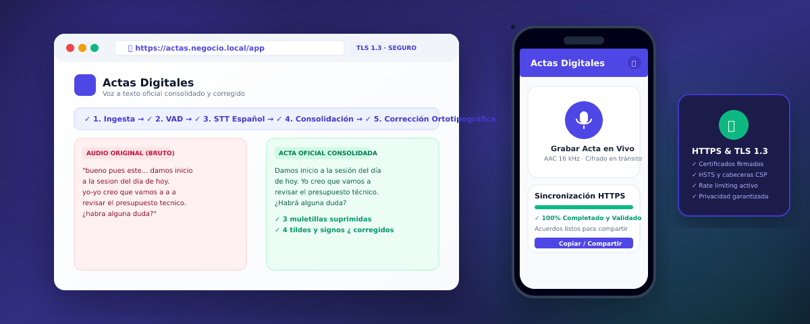

Plataforma completa para Web, Servidor propio y Android nativo en Kotlin. Sube el audio de tu reunión: el sistema transcribe fonéticamente, suprime muletillas, desduplica solapamientos y corrige la ortografía antes de entregar el acta final.

Interfaz moderna con React y TypeScript. Permite grabación de micrófono con Web Audio API, subida drag-and-drop, comparativa visual Antes/Después y exportación a PDF, TXT y Markdown.
Desarrollada con Jetpack Compose y Material 3. Captura audio nativo a 16 kHz / AAC y garantiza subidas resilientes en segundo plano mediante WorkManager incluso si se cae la conexión.
FastAPI con arquitectura orientada a eventos. Certificados TLS firmados con SAN, rate limiting, HSTS y motor de consolidación lingüística que opera 100% en tu propia infraestructura.
No te conformes con una transcripción cruda llena de tartamudeos. Mira la diferencia: